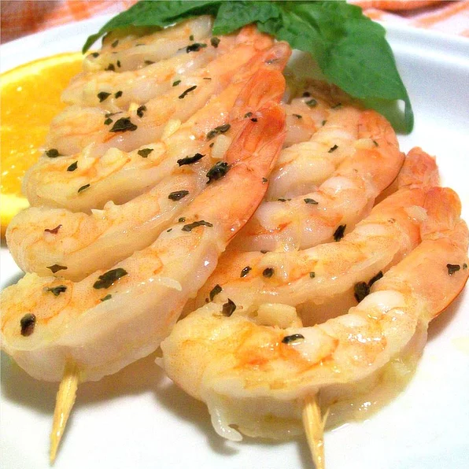

Garlic Prawns

Ingredients
- ½ cup olive oil
- 1 tablespoon Dijon mustard
- 3 cloves garlic, minced
- 1 lemon, juiced
- 1 orange, juiced
- 1 teaspoon dried basil, or to taste
- 2 tablespoons white wine (Optional)
- 30 tiger prawns, peeled and deveined
Recipe
- In a glass dish, mix together the olive oil, mustard, garlic, lemon juice, orange juice, basil and white wine. Add the prawns, and stir to coat. Cover, and let marinate for 1 hour.
- Heat an outdoor grill to high heat.
- Thread prawns onto skewers. Grill for 3 to 5 minutes, turning once, until pink.
- If desired, reserve marinade; transfer to a saucepan and bring to a boil. Reduce heat and simmer for 5 minutes. Serve with prawns.